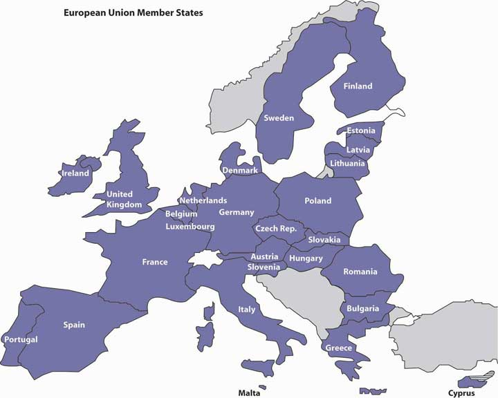

A number of organizations work to ease barriers to trade, and more countries are joining together to promote trade and mutual economic benefits. Let’s look at some of these important initiatives.
Free trade is encouraged by a number of agreements and organizations set up to monitor trade policies. The two most important are the General Agreement on Tariffs and Trade and the World Trade Organization.
After the Great Depression and World War II, most countries focused on protecting home industries, so international trade was hindered by rigid trade restrictions. To rectify this situation, twenty-three nations joined together in 1947 and signed the General Agreement on Tariffs and Trade (GATT)International trade agreement that encourages free trade by regulating and reducing tariffs and provides a forum for resolving trade disputes., which encouraged free trade by regulating and reducing tariffs and by providing a forum for resolving trade disputes. The highly successful initiative achieved substantial reductions in tariffs and quotas, and in 1995 its members founded the World Trade Organization to continue the work of GATT in overseeing global trade.
Based in Geneva, Switzerland, with nearly 150 members, the World Trade Organization (WTO)International organization that monitors trade policies and whose members work together to enforce rules of trade and resolve trade disputes. encourages global commerce and lower trade barriers, enforces international rules of trade, and provides a forum for resolving disputes. It is empowered, for instance, to determine whether a member nation’s trade policies have violated the organization’s rules, and it can direct “guilty” countries to remove disputed barriers (though it has no legal power to force any country to do anything it doesn’t want to do). If the guilty party refuses to comply, the WTO may authorize the plaintiff nation to erect trade barriers of its own, generally in the form of tariffs.
Affected members aren’t always happy with WTO actions. In 2002, for example, the Bush administration imposed a three-year tariff on imported steel. In ruling against this tariff, the WTO allowed the aggrieved nations to impose counter-tariffs on some politically sensitive American products, such as Florida oranges, Texas grapefruits and computers, and Wisconsin cheese. Reluctantly, the administration lifted its tariff on steel.See William F. Buckley, “W.T.O. at Bat,” Uexpress, http://www.townhall.com/opinion/columns/wfbuckley/2003/12/06/160423.html (accessed May 25, 2006); Matthew Benjamin, “Steeling for a Trade Battle,” U.S. News & World Report, November 24, 2003, http://www.usnews.com/usnews/biztech/articles/031124/24trade.htm (accessed May 25, 2006).
The key to helping developing countries become active participants in the global marketplace is providing financial assistance. Offering monetary assistance to some of the poorest nations in the world is the shared goal of two organizations: the International Monetary Fund and the World Bank. These organizations, to which most countries belong, were established in 1944 to accomplish different but complementary purposes.
The International Monetary Fund (IMF)International organization set up to lend money to countries with troubled economies. loans money to countries with troubled economies, such as Mexico in the 1980s and mid-1990s and Russia and Argentina in the late 1990s. There are, however, strings attached to IMF loans: in exchange for relief in times of financial crisis, borrower countries must institute sometimes painful financial and economic reforms. In the 1980s, for example, Mexico received financial relief from the IMF on the condition that it privatize and deregulate certain industries and liberalize trade policies. The government was also required to cut back expenditures for such services as education, health care, and workers’ benefits.Bernard Sanders, “The International Monetary Fund Is Hurting You,” Z Magazine, July–August 1998, http://www.thirdworldtraveler.com/IMF_WB/IMF_Sanders.html (accessed May 25, 2006).
The World BankInternational financial institution that provides economic assistance to poor and developing countries. is an important source of economic assistance for poor and developing countries. With backing from wealthy donor countries (such as the United States, Japan, Germany, and United Kingdom), the World Bank has committed almost $73 billion in loans, grants, and guarantees to some of the world’s poorest nations.“The World Bank Annual Report 2010,” The World Bank, June 2010, http://web.worldbank.org/WBSITE/EXTERNAL/EXTABOUTUS/EXTANNREP/EXTANNREP2010/0,,contentMDK:22626599~menuPK:7115719~pagePK:64168445~piPK:64168309~the SitePK:7074179,00.html#statements (accessed August 25, 2010). Loans are made to help countries improve the lives of the poor through community-support programs designed to provide health, nutrition, education, infrastructure, and other social services.
In recent years, the International Monetary Fund and the World Bank have faced mounting criticism, though both have their supporters. Some analysts, for example, think that the IMF is often too harsh in its demands for economic reform; others argue that troubled economies can be turned around only with harsh economic measures. Some observers assert that too many World Bank loans go to environmentally harmful projects, such as the construction of roads through fragile rain forests. Others point to the World Bank’s efforts to direct funding away from big construction projects and toward initiatives designed to better the lot of the world’s poor—educating children, fighting AIDS, and improving nutrition and health standards.“What Are the Main Concerns and Criticism about the World Bank and IMF?” Bretton Woods Project, March 18, 2011, http://www.google.com/search?q=criticisms+of+world+bank+and+imf&ie=utf-8&oe=utf-8&aq=t&rls=org. mozilla:en-US:official&client=firefox-a (accessed August 25, 2011).
So far, our discussion has suggested that global trade would be strengthened if there were no restrictions on it—if countries didn’t put up barriers to trade or perform special favors for domestic industries. The complete absence of barriers is an ideal state of affairs that we haven’t yet attained. In the meantime, economists and policymakers tend to focus on a more practical question: Can we achieve the goal of free trade on the regional level? To an extent, the answer is yes. In certain parts of the world, groups of countries have joined together to allow goods and services to flow without restrictions across their mutual borders. Such groups are called trading blocsGroups of countries that have joined together to allow goods and services to flow without restrictions across their mutual borders.. Let’s examine two of the most powerful trading blocks—NAFTA and the European Union.
The North American Free Trade Association (NAFTA)Agreement among the governments of the United States, Canada, and Mexico to open their borders to unrestricted trade. is an agreement among the governments of the United States, Canada, and Mexico to open their borders to unrestricted trade. The effect of this agreement is that three very different economies are combined into one economic zone with almost no trade barriers. From the northern tip of Canada to the southern tip of Mexico, each country benefits from the comparative advantages of its partners: each nation is free to produce what it does best and to trade its goods and services without restrictions.
When the agreement was ratified in 1994, it had no shortage of skeptics. Many people feared, for example, that without tariffs on Mexican goods, more U.S. manufacturing jobs would be lost to Mexico, where labor is cheaper. Almost two decades later, most such fears have not been realized, and, by and large, NAFTA has been a success. Since it went into effect, the value of trade between the United States and Mexico has grown substantially, and Canada and Mexico are now the United States’ top trading partners.
The forty-plus countries of Europe have long shown an interest in integrating their economies. The first organized effort to integrate a segment of Europe’s economic entities began in the late 1950s, when six countries joined together to form the European Economic Community (EEC). Over the next four decades, membership grew, and in the late 1990s, the EEC became the European Union. Today, the European Union (EU)Association of European countries that joined together to eliminate trade barriers among themselves. is a group of twenty-seven countries that have eliminated trade barriers among themselves (see the map in Figure 3.9 "The Nations of the European Union").
Figure 3.9 The Nations of the European Union
At first glance, the EU looks similar to NAFTA. Both, for instance, allow unrestricted trade among member nations. But the provisions of the EU go beyond those of NAFTA in several important ways. Most importantly, the EU is more than a trading organization: it also enhances political and social cooperation and binds its members into a single entity with authority to require them to follow common rules and regulations. It is much like a federation of states with a weak central government, with the effect not only of eliminating internal barriers but also of enforcing common tariffs on trade from outside the EU. In addition, while NAFTA allows goods and services as well as capital to pass between borders, the EU also allows people to come and go freely: if you possess an EU passport, you can work in any EU nation.
A key step toward unification occurred in 1999, when most (but not all) EU members agreed to abandon their own currencies and adopt a joint currency. The actual conversion occurred in 2002, when a common currency called the euro replaced the separate currencies of participating EU countries. The common currency facilitates trade and finance because exchange-rate differences no longer complicate transactions.See “The Euro: The Basis for an Undeniable Competitive Advantage,” http://www.investinwallonia.be/an/marche_euro01.htm (accessed May 25, 2006).
Its proponents argued that the EU would not only unite economically and politically distinct countries but also create an economic power that could compete against the dominant players in the global marketplace. Individually, each European country has limited economic power, but as a group, they could be an economic superpower.“Why the Euro?” European Commission, Economic, and Financial Affairs, http://ec.europa.eu/economy_finance/euro/why/index_en.htm (accessed August 26, 2011). But, over time, the value of the euro has been questioned. Just as is true with the United States today, many of the “euro” countries (Spain, Italy, Greece, Portugal, and Ireland in particular) have been financially irresponsible, piling up huge debts and experiencing high unemployment and problems in the housing market. But because these troubled countries share a common currency with the other “euro” countries, they are less able to correct their economic woes.“Paul Krugman: The Economic Failure of the Euro,” NPR (National Public Radio), January 25, 2011, http://www.npr.org/2011/01/25/133112932/paul-krugman-the-economic-failure-of-the-euro (accessed August 26, 2011). Many economists fear that the financial crisis precipitated by these financially irresponsible countries threaten the very survival of the euro.Willem Buiter, “Three Steps to Survival for Euro Zone,” Wall Street Journal: Agenda, December 10, 2010, http://online.wsj.com/article/SB10001424052748703766704576009423447485768.html, (accessed August 26, 2011).
Other countries have also opted for economic integration. Four historical rivals in South America—Argentina, Brazil, Paraguay, and Uruguay—have established MERCOSUR (for Mercado Commun del Sur) to eliminate trade barriers. A number of Asian countries, including Indonesia, Malaysia, the Philippines, Singapore, and Thailand, are cooperating to reduce mutual barriers through ASEAN (the Association of Southeast Asian Nations).
Only time will tell whether the trend toward regional trade agreements is good for the world economy. Clearly, they’re beneficial to their respective participants; for one thing, they get preferential treatment from other members. But certain questions still need to be answered more fully. Are regional agreements, for example, moving the world closer to free trade on a global scale—toward a marketplace in which goods and services can be traded anywhere without barriers?